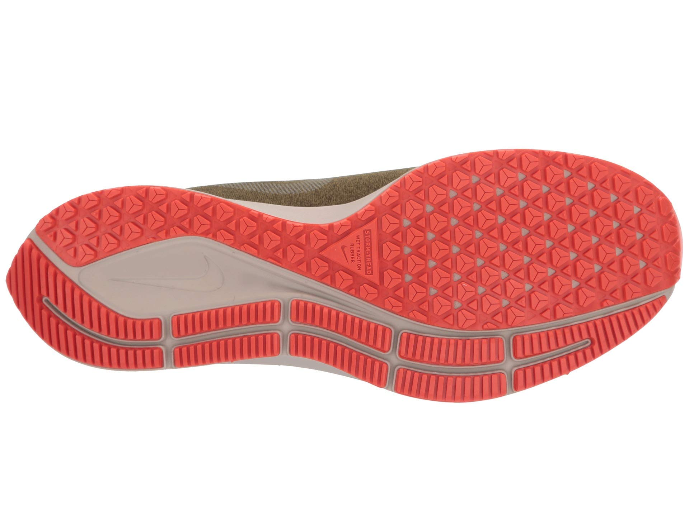
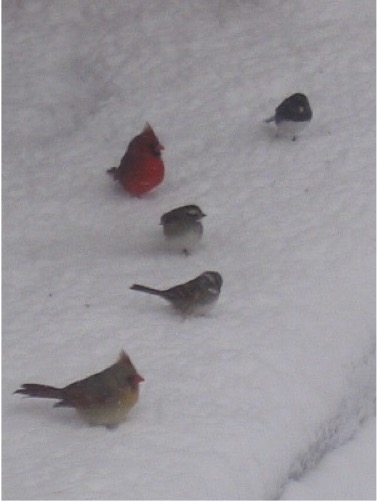
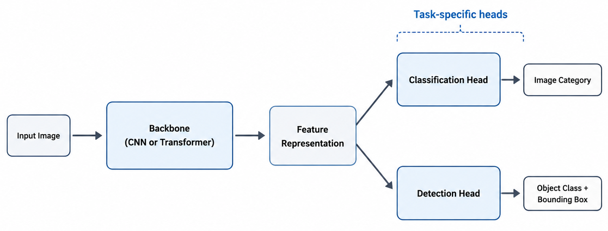
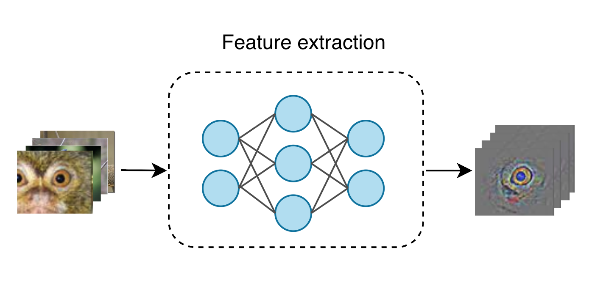
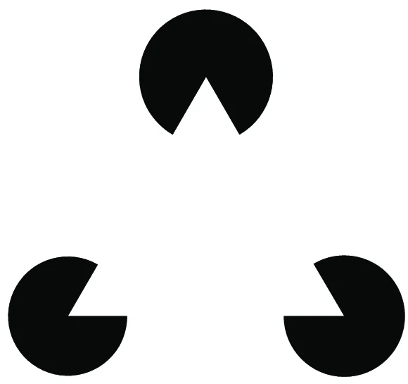
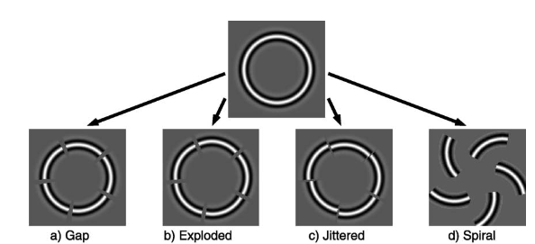
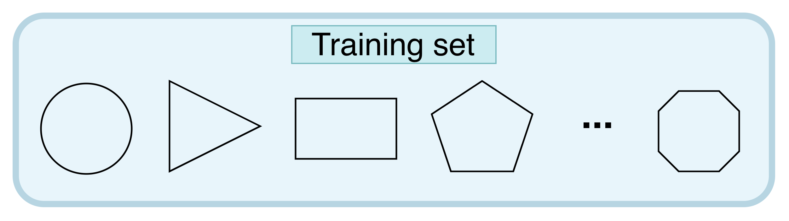
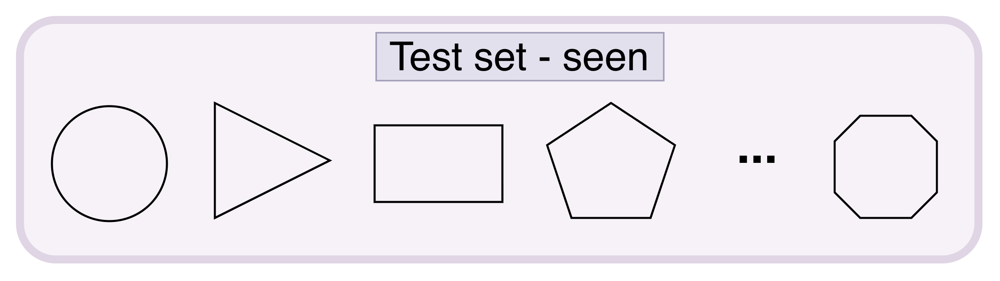
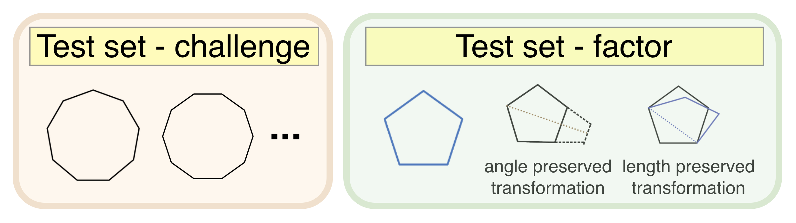
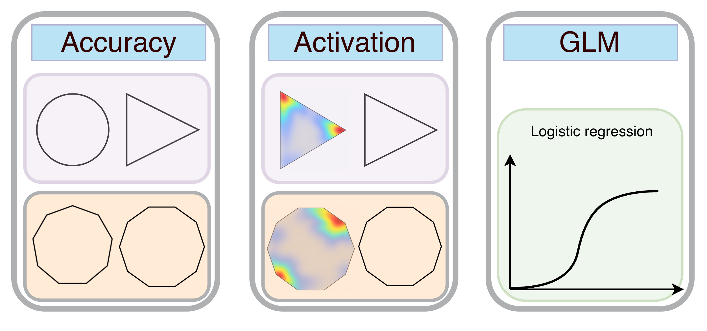

Neural Network-based Vision Model and Visual Recognition of Human
University of Nebraska Lincoln
Motivation
Background
Project 1
Project 2 and project 3
Questions and comments
Motivation · 1/4
Class Characteristics can provide an association between a suspect and the scene (Hammer 2018)
Motivation · 2/4
Link the scenes at the local level
How often a design may occur in a population
How often a random accidental characteristic is likely to repeat
Use pattern descriptions to characterize the types of shoes worn by a population
Motivation · 3/4
Motivation · 4/4

Background · 1/2
Automating the process: neural networks
Human making judgement: human recognition
Do vision models recognize shapes the way humans do?
The coding of shoesoles is ambiguous
Background · 2/2
Do vision models recognize shapes the way humans do?
Background · Neural network · 1/2
Train with annotated data to get optimal weights in both the backbone and the head for specific tasks


Image source: Deng et al. (2009)
Background · Neural network · 2/2
Training from scratch is expensive and requires large training data
AlexNet (Krizhevsky, Sutskever, and Hinton 2012)
Accuracy: percentage of correct predictions
59.3% accuracy on 50k test images
Reuse the backbone

Image source: Zeiler and Fergus (2014)
Background · Human recognition · 1/2
Inspiration of a computer vision model (Fukushima 1980)
But there’s more
Background · Human recognition · 2/2
Gestalt Principles (Koffka 1935)
Illusory contour is not physically present but is filled by the visual system (Kanizsa 1976)

Shape discrimination relies on both local curvature information and the global organization of that information (Loffler, Wilson, and Wilkinson 2003).

Is the object detection network sufficient to automate footwear characteristic identification
Project-1 · 1/8
Frame the footwear characteristic identification problem as an object detection task
Object detection architecture: Faster-RCNN (Ren et al. 2016)
Transfer learning
Project-1 · 2/8
Annotation
Project-1 · 3/8
A total of 4144 images in COCO style (Lin et al. 2014)
Project-1 · 4/8
Widely used metric
Localization precision suffers significantly from inaccurate bounding boxes (Liu et al. 2022)
When the quality of training data degenerates, the performance of the typical object detectors is severely impaired (Xu et al. 2021)
Project-1 · 5/8
Project-1 · 6/8
Pixel-wise evaluation
Project-1 · 7/8
Project-1 · 8/8
How well do neural networks perform on shape generalization tasks
Project 2 and Project 3 · 1/3
Project 2
How do networks with different backbones perform on geometric shape classification?
Are these networks biased toward certain geometric shapes?
How do the activation patterns differ between the networks in classification?
Project 3
Project 2 and Project 3 · 2/3




Project 2 and Project 3 · 3/3
Investigate neural networks’ performance on shape generalization tasks
Explore whether neural networks can learn abstract shape representation
Identify the factors that impact the decisions of neural networks in polygon classification tasks using statistical study
Provide recommended architecture for geometric related tasks
Project 2 progress
Project 3 progress